我们所要介绍的是祥子，不是骆驼，因为“骆驼”只是个外号；那么，我们就先说祥子，随手儿把骆驼与祥子那点关系说过去，也就算了。
比这一派岁数稍大的，或因身体的关系而跑得稍差点劲的，或因家庭的关系而不敢白耗一天的，大概就多数的拉八成新的车；人与车都有相当的漂亮，所以在要价儿的时候也还能保持住相当的尊严。这派的车夫，也许拉“整天”，也许拉“半天”。在后者的情形下，因为还有相当的精气神，所以无论冬天夏天总是“拉晚儿”[3]。夜间，当然比白天需要更多的留神与本事；钱自然也多挣一些。
年纪在四十以上，二十以下的，恐怕就不易在前两派里有个地位了。他们的车破，又不敢“拉晚儿”，所以只能早早的出车，希望能从清早转到午后三四点钟，拉出“车份儿”和自己的嚼谷[4]。他们的车破，跑得慢，所以得多走路，少要钱。到瓜市，果市，菜市，去拉货物，都是他们；钱少，可是无须快跑呢。
在这里，二十岁以下的——有的从十一二岁就干这行儿——很少能到二十岁以后改变成漂亮的车夫的，因为在幼年受了伤，很难健壮起来。他们也许拉一辈子洋车，而一辈子连拉车也没出过风头。那四十以上的人，有的是已拉了十年八年的车，筋肉的衰损使他们甘居人后，他们渐渐知道早晚是一个跟头会死在马路上。他们的拉车姿势，讲价时的随机应变，走路的抄近绕远，都足以使他们想起过去的光荣，而用鼻翅儿扇着那些后起之辈。可是这点光荣丝毫不能减少将来的黑暗，他们自己也因此在擦着汗的时节常常微叹。不过，以他们比较另一些四十上下岁的车夫，他们还似乎没有苦到了家。这一些是以前决没想到自己能与洋车发生关系，而到了生和死的界限已经不甚分明，才抄起车把来的。被撤差的巡警或校役，把本钱吃光的小贩，或是失业的工匠，到了卖无可卖，当无可当的时候，咬着牙，含着泪，上了这条到死亡之路。这些人，生命最鲜壮的时期已经卖掉，现在再把窝窝头变成的血汗滴在马路上。没有力气，没有经验，没有朋友，就是在同行的当中也得不到好气儿。他们拉最破的车，皮带不定一天泄多少次气；一边拉着人还得一边儿央求人家原谅，虽然十五个大铜子儿已经算是甜买卖。
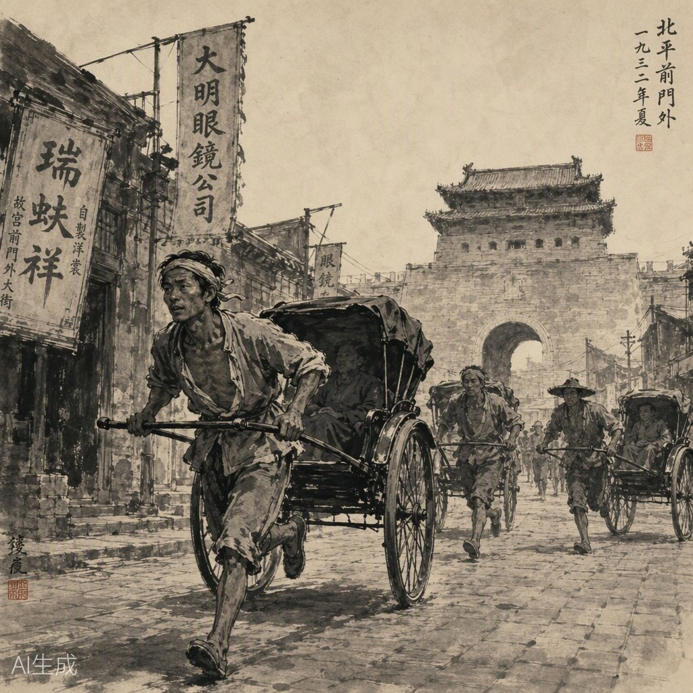
此外，因环境与知识的特异，又使一部分车夫另成派别。生于西苑海甸的自然以走西山，燕京，清华，较比方便；同样，在安定门外的走清河，北苑；在永定门外的走南苑……这是跑长趟的，不愿拉零座；因为拉一趟便是一趟，不屑于三五个铜子的穷凑了。可是他们还不如东交民巷的车夫的气儿长，这些专拉洋买卖的[5]讲究一气儿由交民巷拉到玉泉山，颐和园或西山。气长也还算小事，一般车夫万不能争这项生意的原因，大半还是因为这些吃洋饭的有点与众不同的知识，他们会说外国话。英国兵，法国兵，所说的万寿山，雍和宫，“八大胡同”，他们都晓得。他们自己有一套外国话，不传授给别人。他们的跑法也特别，四六步儿不快不慢，低着头，目不旁视的，贴着马路边儿走，带出与世无争，而自有专长的神气。因为拉着洋人，他们可以不穿号坎，而一律的是长袖小白褂，白的或黑的裤子，裤筒特别肥，脚腕上系着细带；脚上是宽双脸千层底青布鞋；干净，利落，神气。一见这样的服装，别的车夫不会再过来争座与赛车，他们似乎是属于另一行业的。
有了这点简单的分析，我们再说祥子的地位，就像说——我们希望——一盘机器上的某种钉子那么准确了。祥子，在与“骆驼”这个外号发生关系以前，是个较比有自由的洋车夫，这就是说，他是属于年轻力壮，而且自己有车的那一类：自己的车，自己的生活，都在自己手里，高等车夫。
这可绝不是件容易的事。一年，二年，至少有三四年；一滴汗，两滴汗，不知道多少万滴汗，才挣出那辆车。从风里雨里的咬牙，从饭里茶里的自苦，才赚出那辆车。那辆车是他的一切挣扎与困苦的总结果与报酬，像身经百战的武士的一颗徽章。在他赁人家的车的时候，他从早到晚，由东到西，由南到北，像被人家抽着转的陀螺，他没有自己。可是在这种旋转之中，他的眼并没有花，心并没有乱，他老想着远远的一辆车，可以使他自由，独立，像自己的手脚的那么一辆车。有了自己的车，他可以不再受拴车的[6]人们的气，也无须敷衍别人；有自己的力气与洋车，睁开眼就可以有饭吃。
他不怕吃苦，也没有一般洋车夫的可以原谅而不便效法的恶习，他的聪明和努力都足以使他的志愿成为事实。假若他的环境好一些，或多受着点教育，他一定不会落在“胶皮团”[7]里，而且无论是干什么，他总不会辜负了他的机会。不幸，他必须拉洋车；好，在这个营生里他也证明出他的能力与聪明。他仿佛就是在地狱里也能作个好鬼似的。生长在乡间，失去了父母与几亩薄田，十八岁的时候便跑到城里来。带着乡间小伙子的足壮与诚实，凡是以卖力气就能吃饭的事他几乎全作过了。可是，不久他就看出来，拉车是件更容易挣钱的事；作别的苦工，收入是有限的；拉车多着一些变化与机会，不知道在什么时候与地点就会遇到一些多于所希望的报酬。自然，他也晓得这样的机遇不完全出于偶然，而必须人与车都得漂亮精神，有货可卖才能遇到识货的人。想了一想，他相信自己有那个资格：他有力气，年纪正轻；所差的是他还没有跑过，与不敢一上手就拉漂亮的车。但这不是不能胜过的困难，有他的身体与力气作基础，他只要试验个十天半月的，就一定能跑得有个样子，然后去赁辆新车，说不定很快的就能拉上包车，然后省吃俭用的一年二年，即使是三四年，他必能自己打上一辆车，顶漂亮的车！看着自己的青年的肌肉，他以为这只是时间的问题，这是必能达到的一个志愿与目的，绝不是梦想！
他的身量与筋肉都发展到年岁前边去；二十来岁，他已经很大很高，虽然肢体还没被年月铸成一定的格局，可是已经像个成人了——一个脸上身上都带出天真淘气的样子的大人。看着那高等的车夫，他计划着怎样杀进他的腰[8]去，好更显出他的铁扇面似的胸，与直硬的背；扭头看看自己的肩，多么宽，多么威严！杀好了腰，再穿上肥腿的白裤，裤脚用鸡肠子带儿系往，露出那对“出号”的大脚！是的，他无疑的可以成为最出色的车夫；傻子似的他自己笑了。
他没有什么模样，使他可爱的是脸上的精神。头不很大，圆眼，肉鼻子，两条眉很短很粗，头上永远剃得发亮。腮上没有多余的肉，脖子可是几乎与头一边儿[9]粗；脸上永远红扑扑的，特别亮的是颧骨与右耳之间一块不小的疤——小时候在树下睡觉，被驴啃了一口。他不甚注意他的模样，他爱自己的脸正如同他爱自己的身体，都那么结实硬棒；他把脸仿佛算在四肢之内，只要硬棒就好。是的，到城里以后，他还能头朝下，倒着立半天。这样立着，他觉得，他就很像一棵树，上下没有一个地方不挺脱的。
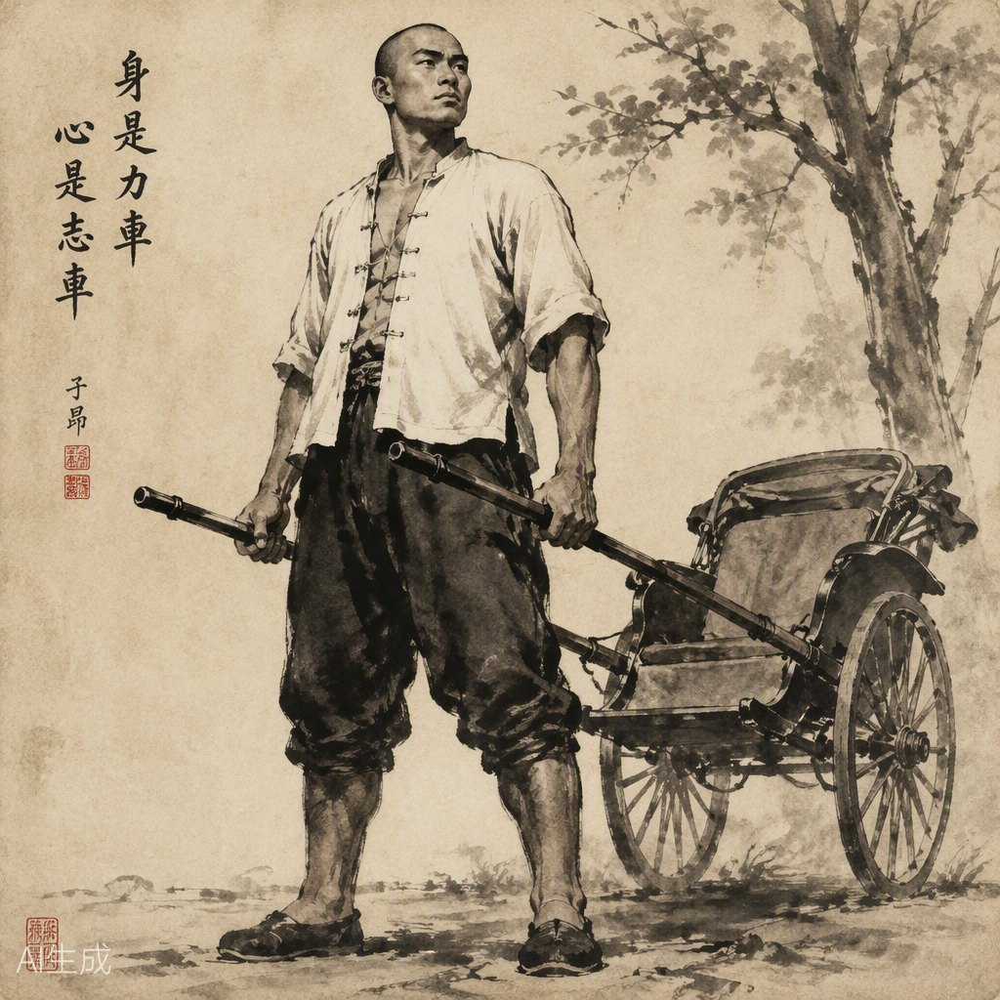
他确乎有点像棵树，坚壮，沉默，而又有生气。他有自己的打算，有些心眼，但不好向别人讲论。在洋车夫里，个人的委屈与困难是公众的话料，“车口儿”上，小茶馆中，大杂院里，每人报告着形容着或吵嚷着自己的事，而后这些事成为大家的财产，像民歌似的由一处传到一处。祥子是乡下人，口齿没有城里人那么灵便；设若口齿灵利是出于天才，他天生来的不愿多说话，所以也不愿学着城里人的贫嘴恶舌。他的事他知道，不喜欢和别人讨论。因为嘴常闲着，所以他有工夫去思想，他的眼仿佛是老看着自己的心。只要他的主意打定，他便随着心中所开开的那条路儿走；假若走不通的话，他能一两天不出一声，咬着牙，好似咬着自己的心！
祥子开始拉车
Сянцзы начинает работать рикшей
他决定去拉车，就拉车去了。赁了辆破车，他先练练腿。第一天没拉着什么钱。第二天的生意不错，可是躺了两天，他的脚脖子肿得像两条瓠子似的，再也抬不起来。他忍受着，不管是怎样的疼痛。他知道这是不可避免的事，这是拉车必须经过的一关。非过了这一关，他不能放胆的去跑。
脚好了之后，他敢跑了。这使他非常的痛快，因为别的没有什么可怕的了：地名他很熟习，即使有时候绕点远没大关系，好在自己有的是力气。拉车的方法，以他干过的那些推、拉、扛、挑的经验来领会，也不算十分难。况且他有他的主意：多留神，少争胜，大概总不会出了毛病。至于讲价争座，他的嘴慢气盛，弄不过那些老油子们。知道这个短处，他干脆不大到“车口儿”上去；哪里没车，他放在哪里。在这僻静的地点，他可以从容的讲价，而且有时候不肯要价，只说声：“坐上吧，瞧着给！”他的样子是那么诚实，脸上是那么简单可爱，人们好像只好信任他，不敢想这个傻大个子是会敲人的。即使人们疑心，也只能怀疑他是新到城里来的乡下佬儿，大概不认识路，所以讲不出价钱来。及至人们问到，“认识呀？”他就又像装傻，又像耍俏的那么一笑，使人们不知怎样才好。
两三个星期的工夫，他把腿溜出来了。他晓得自己的跑法很好看。跑法是车夫的能力与资格的证据。那撇着脚，像一对蒲扇在地上扇乎的，无疑的是刚由乡间上来的新手。那头低得很深，双脚蹭地，跑和走的速度差不多，而颇有跑的表示的，是那些五十岁以上的老者们。那经验十足而没什么力气的却另有一种方法：胸向内含，度数很深；腿抬得很高；一走一探头；这样，他们就带出跑得很用力的样子，而在事实上一点也不比别人快；他们仗着“作派”去维持自己的尊严。祥子当然决不采取这几种姿态。他的腿长步大，腰里非常的稳，跑起来没有多少响声，步步都有些伸缩，车把不动，使座儿觉到安全，舒服。说站住，不论在跑得多么快的时候，大脚在地上轻蹭两蹭，就站住了；他的力气似乎能达到车的各部分。脊背微俯，双手松松拢住车把，他活动、利落、准确；看不出急促而跑得很快，快而没有危险。就是在拉包车的里面，这也得算很名贵的。
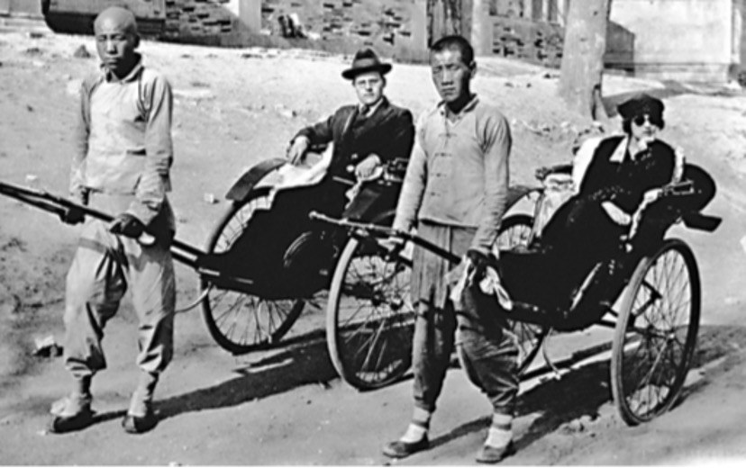
他换了新车。从一换车那天，他就打听明白了，像他赁的那辆——弓子软，铜活[10]地道，雨布大帘，双灯，细脖大铜喇叭——值一百出头；若是漆工与铜活含忽一点呢，一百元便可以打住。大概的说吧，他只要有一百块钱，就能弄一辆车。猛然一想，一天要是能剩一角的话，一百元就是一千天，一千天！把一千天堆到一块，他几乎算不过来这该有多么远。但是，他下了决心，一千天，一万天也好，他得买车——第一步他应当，他想好了，去拉包车。遇上交际多，饭局[11]多的主儿，平均一月有上十来个饭局，他就可以白落两三块的车饭钱。加上他每月再省出个块儿八角的，也许是三头五块的，一年就能剩起五六十块！这样，他的希望就近便多多了。他不吃烟，不喝酒，不赌钱，没有任何嗜好，没有家庭的累赘，只要他自己肯咬牙，事儿就没有个不成。他对自己起下了誓，一年半的工夫，他——祥子——非打成自己的车不可！是现打的，不要旧车见过新的。
他真拉上了包月。可是，事实并不完全帮助希望。不错，他确是咬了牙，但是到了一年半他并没还上那个誓愿。包车确是拉上了，而且谨慎小心的看着事情；不幸，世上的事并不是一面儿的。他自管小心他的，东家并不因此就不辞他；不定是三两个月，还是十天八天，吹[12]了；他得另去找事。自然，他得一边儿找事，还得一边儿拉散座；骑马找马，他不能闲起来。在这种时节，他常常闹错儿。他还强打着精神，不专为混一天的嚼谷，而且要继续着积储买车的钱。可是强打精神永远不是件妥当的事：拉起车来，他不能专心一志的跑，好像老想着些什么，越想便越害怕，越气不平。假若老这么下去，几时才能买上车呢？为什么这样呢？难道自己还算个不要强的？在这么乱想的时候，他忘了素日的谨慎。皮轮子上了碎铜烂磁[13]片，放了炮；只好收车。更严重一些的，有时候碰了行人，甚至有一次因急于挤过去而把车轴盖碰丢了。设若他是拉着包车，这些错儿绝不能发生；一搁下了事，他心中不痛快，便有点愣头磕脑的。碰坏了车，自然要赔钱；这更使他焦躁，火上加了油；为怕惹出更大的祸，他有时候懊睡一整天。及至睁开眼，一天的工夫已白白过去，他又后悔，自恨。还有呢，在这种时期，他越着急便越自苦，吃喝越没规则；他以为自己是铁作的，可是敢情他也会病。病了，他舍不得钱去买药，自己硬挺着；结果，病越来越重，不但得买药，而且得一气儿休息好几天。这些个困难，使他更咬牙努力，可是买车的钱数一点不因此而加快的凑足。
祥子第一次买车
Сянцзы покупает первую рикшу
整整的三年，他凑足了一百块钱！
他不能再等了。原来的计划是买辆最完全最新式最可心的车，现在只好按着一百块钱说了。不能再等；万一出点什么事再丢失几块呢！恰巧有辆刚打好的车——定作而没钱取货的——跟他所期望的车差不甚多；本来值一百多，可是因为定钱放弃了，车铺愿意少要一点。祥子的脸通红，手哆嗦着，拍出九十六块钱来：“我要这辆车！”铺主打算挤到个整数，说了不知多少话，把他的车拉出去又拉进来，支开棚子，又放下，按按喇叭，每一个动作都伴着一大串最好的形容词；最后还在钢轮条上踢了两脚：“听听声儿吧，铃铛似的！拉去吧，你就是把车拉碎了，要是钢条软了一根，你拿回来，把它摔在我脸上！一百块，少一分咱们吹！”祥子把钱又数了一遍：“我要这辆车，九十六！”铺主知道是遇见了一个心眼的人，看看钱，看看祥子，叹了口气：“交个朋友，车算你的了；保六个月除非你把大箱碰碎，我都白给修理；保单，拿着！”
祥子的手哆嗦得更厉害了，揣起保单，拉起车，几乎要哭出来。拉到个僻静地方，细细端详自己的车，在漆板上试着照照自己的脸！越看越可爱，就是那不尽合自己的理想的地方也都可以原谅了，因为已经是自己的车了。把车看得似乎暂时可以休息会儿了，他坐在了水簸箕的新脚垫儿上，看着车把上的发亮的黄铜喇叭。他忽然想起来，今年是二十二岁。因为父母死得早，他忘了生日是在哪一天。自从到城里来，他没过一次生日。好吧，今天买上了新车，就算是生日吧，人的也是车的，好记，而且车既是自己的心血，简直没什么不可以把人与车算在一块的地方。
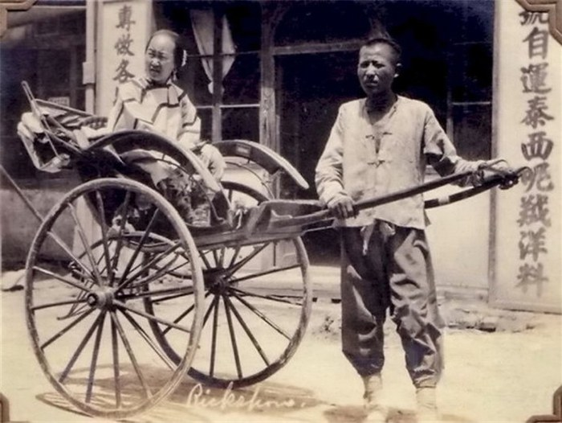
怎样过这个“双寿”呢？祥子有主意：头一个买卖必须拉个穿得体面的人，绝对不能是个女的。最好是拉到前门，其次是东安市场。拉到了，他应当在最好的饭摊上吃顿饭，如热烧饼夹爆羊肉之类的东西。吃完，有好买卖呢就再拉一两个；没有呢，就收车；这是生日！
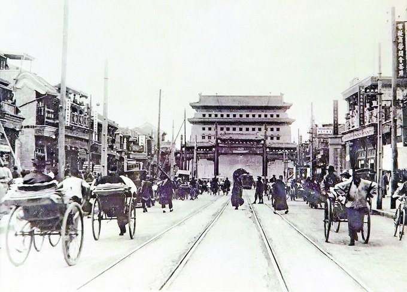
自从有了这辆车，他的生活过得越来越起劲了。拉包月也好，拉散座也好，他天天用不着为“车份儿”着急，拉多少钱全是自己的。心里舒服，对人就更和气，买卖也就更顺心。拉了半年，他的希望更大了：照这样下去，干上二年，至多二年，他就又可以买辆车，一辆，两辆……他也可以开车厂子了！
可是，希望多半落空，祥子的也非例外。
二
Глава вторая
因为高兴，胆子也就大起来；自从买了车，祥子跑得更快了。自己的车，当然格外小心，可是他看看自己，再看看自己的车，就觉得有些不是味儿，假若不快跑的话。
他自己，自从到城里来，又长高了一寸多。他自己觉出来，仿佛还得往高里长呢。不错，他的皮肤与模样都更硬棒与固定了一些，而且上唇上已有了小小的胡子；可是他以为还应当再长高一些。当他走到个小屋门或街门而必须大低头才能进去的时候，他虽不说什么，可是心中暗自喜欢，因为他已经是这么高大，而觉得还正在发长，他似乎既是个成人，又是个孩子，非常有趣。
这么大的人，拉上那么美的车，他自己的车，弓子软得颤悠颤悠的，连车把都微微的动弹；车箱是那么亮，垫子是那么白，喇叭是那么响；跑得不快怎能对得起自己呢？怎能对得起那辆车呢？这一点不是虚荣心，而似乎是一种责任，非快跑，飞跑，不足以充分发挥自己的力量与车的优美。那辆车也真是可爱，拉过了半年来的，仿佛处处都有了知觉与感情，祥子的一扭腰，一蹲腿，或一直脊背，它都就马上应合着，给祥子以最顺心的帮助，他与它之间没有一点隔膜别扭的地方。赶到遇上地平人少的地方，祥子可以用一只手拢着把，微微轻响的皮轮像阵利飕的小风似的催着他跑，飞快而平稳。拉到了地点，祥子的衣裤都拧得出汗来，哗哗的，像刚从水盆里捞出来的。他感到疲乏，可是很痛快的，值得骄傲的，一种疲乏，如同骑着名马跑了几十里那样。
假若胆壮不就是大意，祥子在放胆跑的时候可并不大意。不快跑若是对不起人，快跑而碰伤了车便对不起自己。车是他的命，他知道怎样的小心。小心与大胆放在一处，他便越来越能自信，他深信自己与车都是铁作的。
因此，他不但敢放胆的跑，对于什么时候出车也不大去考虑。他觉得用力拉车去挣口饭吃，是天下最有骨气的事；他愿意出去，没人可以拦住他。外面的谣言他不大往心里听，什么西苑又来了兵，什么长辛店又打上了仗，什么西直门外又在拉，什么齐化门已经关了半天，他都不大注意。自然，街上铺户已都上了门，而马路上站满了武装警察与保安队，他也不便故意去找不自在，也和别人一样急忙收车了。可是，谣言，他不信。他知道怎样谨慎，特别因为车是自己的，但是他究竟是乡下人，不像城里人那样听见风便是雨。再说，他的身体使他相信，即使不幸赶到“点儿”上，他必定有办法，不至于吃亏；他不是容易欺侮的，那么大的个子，那么宽的肩膀！
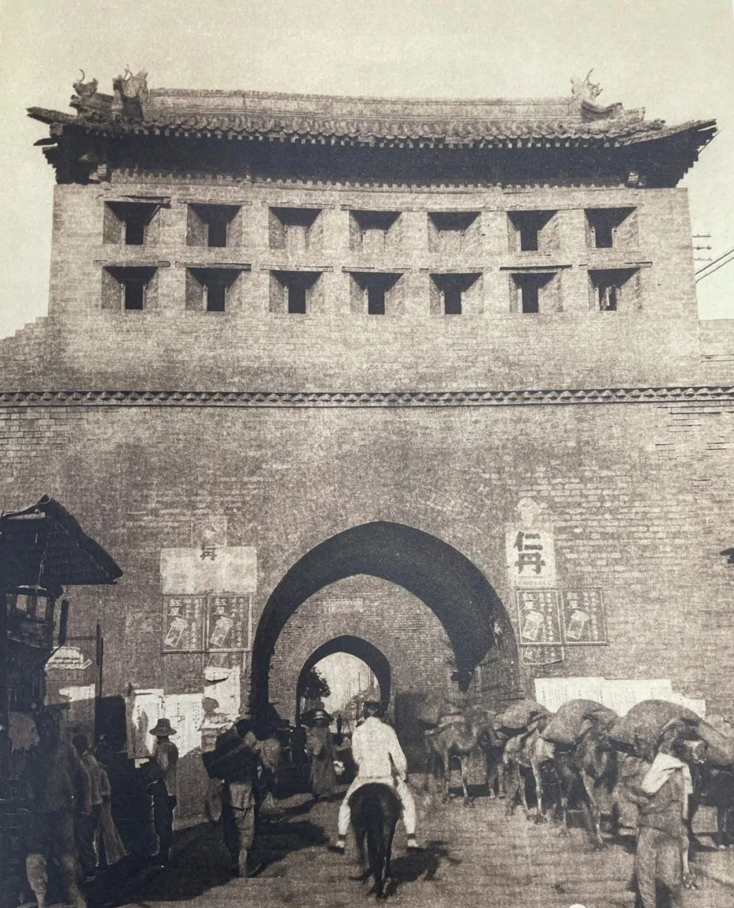
战争的消息与谣言几乎每年随着春麦一块儿往起长，麦穗与刺刀可以算作北方人的希望与忧惧的象征。祥子的新车刚交半岁的时候，正是麦子需要春雨的时节。春雨不一定顺着人民的盼望而降落，可是战争不管有没有人盼望总会来到。谣言吧，真事儿吧，祥子似乎忘了他曾经作过庄稼活；他不大关心战争怎样的毁坏农地，也不大注意春雨的有无。他只关心他的车，他的车能产生烙饼与一切吃食，它是块万能的田地，很驯顺的随着他走，一块活地，宝地。因为缺雨，因为战争的消息，粮食都长了价钱；这个，祥子知道。可是他和城里人一样的只会抱怨粮食贵，而一点主意没有；粮食贵，贵吧，谁有法儿教它贱呢？这种态度使他只顾自己的生活，把一切祸患灾难都放在脑后。
第一次丢车与骆驼
Первая потеря рикши и верблюды
还没拉到便道上，祥子和光头的矮子连车带人都被十来个兵捉了去！他的衣服鞋帽，洋车，甚至于系腰的布带，都被他们抢了去；只留给他青一块紫一块的一身伤，和满脚的疱！不过，衣服，算不了什么；身上的伤，不久就会好的。他的车，几年的血汗挣出来的那辆车，没了！自从一拉到营盘里就不见了！以前的一切辛苦困难都可一贬眼忘掉，可是他忘不了这辆车！吃苦，他不怕；可是再弄上一辆车不是随便一说就行的事；至少还得几年的工夫！过去的成功全算白饶，他得重打鼓另开张打头儿来！祥子落了泪！他不但恨那些兵，而且恨世上的一切了。凭什么把人欺侮到这个地步呢？凭什么？“凭什么？”他喊了出来。
“为什么不去卖了它们，再买上一辆车呢？”他几乎要跳起来了！可是他没动，好象因为先前没想到这样最自然最省事的办法而觉得应当惭愧似的。喜悦胜过了惭愧，他打定了主意：兵荒马乱的期间，车必定便宜一些；他只顾了想买车，好似卖骆驼是件毫无困难的事。他不晓得现在骆驼有什么行市，只听说过在老年间，没有火车的时候，一条骆驼要值一个大宝[14]，因为骆驼力气大，而吃得比骡马还省。他不希望得三个大宝，只盼望换个百儿八十的，恰好够买一辆车的。
祥子在海甸的一家小店里躺了三天，身上忽冷忽热，心中迷迷忽忽，牙床上起了一溜紫泡，只想喝水，不想吃什么。饿了三天，火气降下去，身上软得象皮糖似的。恐怕就是在这三天里，他与三匹骆驼的关系由梦话或胡话中被人家听了去。一清醒过来，他已经是“骆驼祥子”了。不过，三条牲口才换了那么几块钱，而自己倒落了个外号，他觉得有点不大上算。
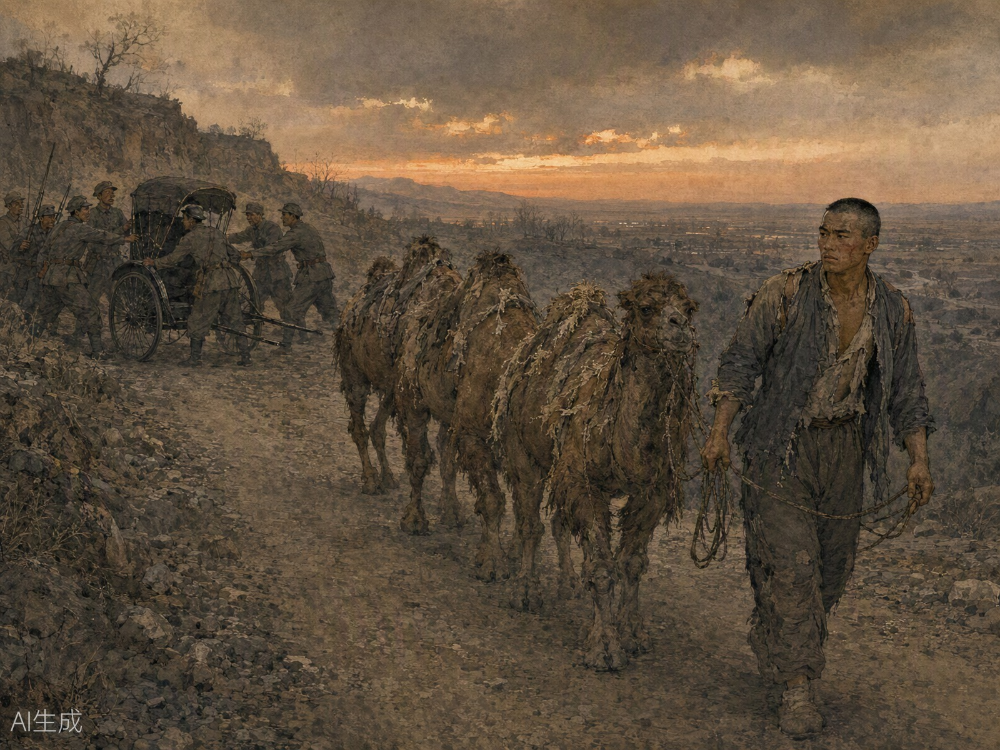
老马与小马儿
Старый Ма и его внук
情节衔接：祥子到曹先生家拉包月，在小茶馆遇见老车夫祖孙。
这时候，老者的干草似的灰发，脸上的泥，炭条似的手，和那个破帽头与棉袄，都象发着点纯洁的光，如同破庙里的神像似的，虽然破碎，依然尊严。大家看着他，仿佛唯恐他走了。祥子始终没言语，呆呆的立在那里。听到老车夫说肚子里空，他猛的跑出去，飞也似又跑回来，手里用块白菜叶儿托着十个羊肉馅的包子。一直送到老者的眼前，说了声：吃吧！然后，坐在原位，低下头去，仿佛非常疲倦。
老者用手摸了好几回包子，始终没往起拿。小马儿刚一进门，他拿起来一个：“小马儿，乖乖，给你！”小马儿也就是十二三岁，脸上挺瘦，身上可是穿得很圆，鼻子冻得通红，挂着两条白鼻涕，耳朵上戴着一对破耳帽儿。立在老者的身旁，右手接过包子来，左手又自动的拿起来一个，一个上咬了一口。“说说不要紧！都不是外人！”然后向大家低声的：“孩子心重，甭提多么要强啦！媳妇也走了。我们爷儿俩就吃这辆车；车破，可是我们自己的，就仗着天天不必为车份儿着急。挣多挣少，我们爷儿俩苦混，无法！无法！”
在老者身上，似乎看到了自己的将来！他向来没有轻易撒手过一个钱，现在他觉得很痛快，为这一老一少买了十个包子。那一老一少似乎把他的最大希望给打破——老者的车是自己的呀！自从他头一天拉车，他就决定买上自己的车，现在还是为这个志愿整天的苦奔；有了自己的车，他以为，就有了一切。哼，看看那个老头子！
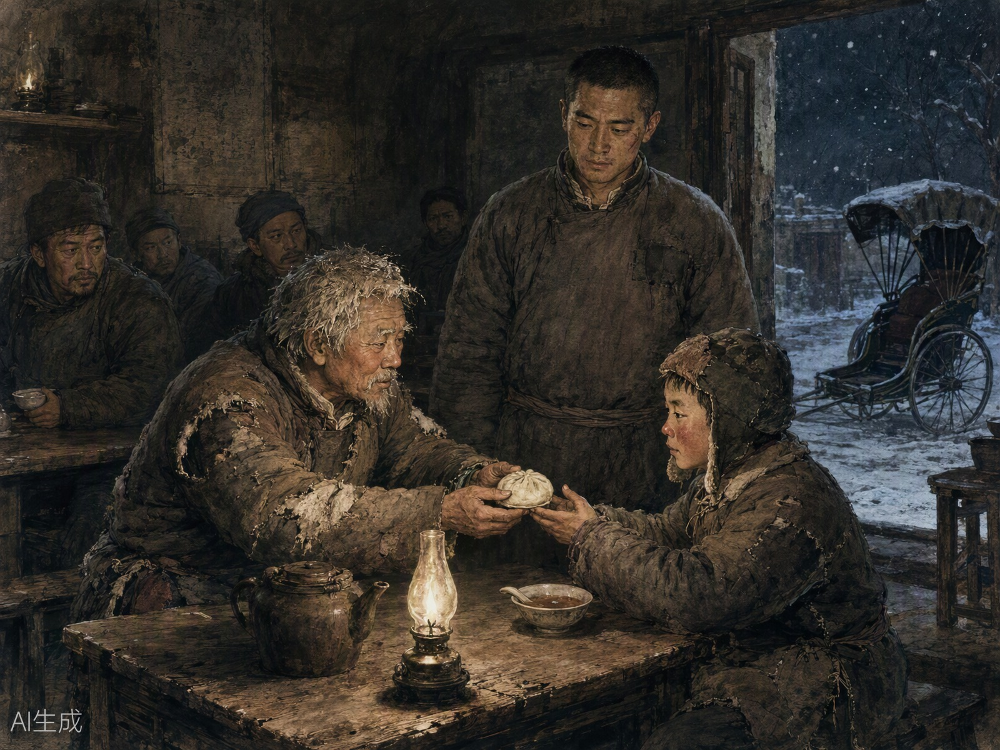
孙侦探敲诈
Вымогательство сыщика Суня
情节衔接：曹先生遭侦探跟踪，祥子回家报信时被孙侦探截住。
“祥子，我的好伙计！你太傻了！凭我作侦探的，肯把你放了走？”“那——”祥子急得不知说什么好了。“别装傻！”孙侦探的眼盯住祥子的：“大概你也有个积蓄，拿出来买条命！我一个月还没你挣的多，得吃得穿得养家，就仗着点外找儿，跟你说知心话！你想想，我能一撒巴掌把你放了不能？哥儿们的交情是交情，没交情我能来劝你吗？可是事情是事情，我不图点什么，难道教我一家子喝西北风？外场人用不着费话，你说真的吧！”
“得多少？”祥子坐在了床上。“有多少拿多少，没准价儿！”“我等着坐狱得了！”“这可是你说的？可别后悔？”孙侦探的手伸入棉袍中，“看这个，祥子！我马上就可以拿你，你要拒捕的话，我开枪！我要马上把你带走，不要说钱呀，连你这身衣裳都一进狱门就得剥下来。你是明白人，自己合计合计得了！”
“那是正犯，拿住呢有点赏，拿不住担‘不是’。你，你呀，我的傻兄弟，把你放了象放个屁；把你杀了象抹个臭虫！拿钱呢，你走你的；不拿，好，天桥见！别磨烦、来干脆的，这么大的人！”祥子立起来，脑筋跳起多高，攥上了拳头。“动手没你的，我先告诉你，外边还有一大帮人呢！快着，拿钱！我看面子，你别不知好歹！”孙侦探的眼神非常的难看了。“我招谁惹谁了？！”祥子带着哭音，说完又坐在床沿上。
祥子又想了会儿，没办法。他的手哆嗦着，把闷葫芦罐儿[15]从被子里掏了出来。“我看看！”孙侦探笑了，一把将瓦罐接过来，往墙上一碰。祥子看着那些钱洒在地上，心要裂开。“就是这点？”祥子没出声，只剩了哆嗦。“算了吧！我不赶尽杀绝，朋友是朋友。你可也得知道，这些钱儿买一条命，便宜事儿！”祥子还没出声，哆嗦着要往起裹被褥。“那也别动！”“这么冷的……”祥子的眼瞪得发了火。“我告诉你别动，就别动！滚！”祥子咽了口气，咬了咬嘴唇，推门走出来。雪已下了寸多厚，祥子低着头走。处处洁白，只有他的身后留着些大黑脚印。
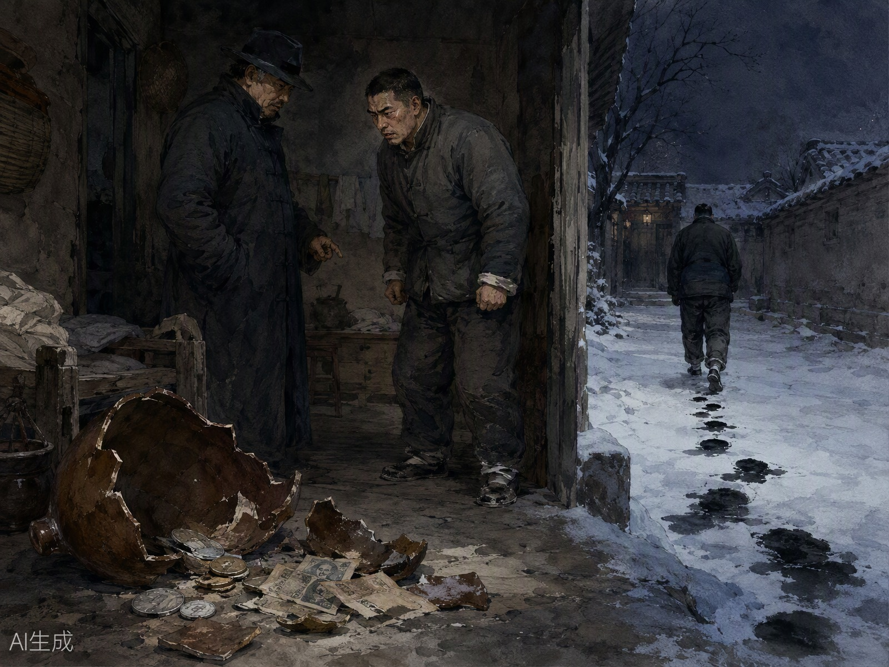
虎妞与祥子成婚
Свадьба Хуню и Сянцзы
情节衔接：祥子与虎妞的关系惹怒刘四爷，父女在寿宴上决裂。
“祥子你等等走！”虎妞心中打了个闪似的，看清楚：自己的计划是没多大用处了，急不如快，得赶紧抓住祥子，别鸡也飞蛋也打了！“咱们俩的事，一条绳拴着俩蚂蚱，谁也跑不了！你等等，等我说明白了！”她转过头来，冲着老头子，“干脆说了吧，我已经有了，祥子的！他上哪儿我也上哪儿！你是把我给他呢？还是把我们俩一齐赶出去？听你一句话！”虎妞没想到事情来得这么快，把最后的一招这么早就拿出来。刘四爷更没想到事情会弄到了这步天地。但是，事已至此，他不能服软，特别是在大家面前。“你真有脸往外说，我这个老脸都替你发烧！”他打了自己个嘴巴。“呸！好不要脸！”“钱是我的，我爱给谁才给！”老头子听女儿说要走，心中有些难过，但是为斗这口气，他狠了心。
事情果然办得很快。虎妞在毛家湾一个大杂院里租到两间小北房；马上找了裱糊匠糊得四白落地；求冯先生给写了几个喜字，贴在屋中。初六，虎妞坐上了花轿。没和父亲过一句话，没有弟兄的护送，没有亲友的祝贺；只有那些锣鼓在新年后的街上响得很热闹，花轿稳稳的走过西安门，西四牌楼，也惹起穿着新衣的人们——特别是铺户中的伙计——一些羡慕，一些感触。
婚夕，祥子才明白：虎妞并没有怀了孕。象变戏法的，她解释给他听：“要不这么冤你一下，你怎会死心踏地的点头呢！我在裤腰上塞了个枕头！哈哈，哈哈！”她笑得流出泪来：“你个傻东西！甭提了，反正我对得起你；你是怎个人，我是怎个人？我楞和爸爸吵了，跟着你来，你还不谢天谢地？”
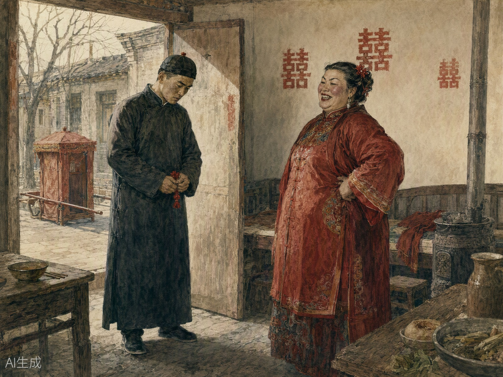
暴雨中的祥子
Сянцзы под проливным дождём
情节衔接：婚后虎妞买了车，祥子仍在烈日暴雨下苦撑。
祥子的衣服早已湿透，全身没有一点干松地方；隔着草帽，他的头发已经全湿。地上的水过了脚面，已经很难迈步；上面的雨直砸着他的头与背，横扫着他的脸，裹着他的裆。他不能抬头，不能睁眼，不能呼吸，不能迈步。他象要立定在水中，不知道哪是路，不晓得前后左右都有什么，只觉得透骨凉的水往身上各处浇，他什么也不知道了，只心中茫茫的有点热气，耳旁有一片雨声。他要把车放下，但是不知放在哪里好。想跑，水裹住他的腿。他就那么半死半活的，低着头一步一步的往前曳。坐车的仿佛死在了车上，一声不出的任着车夫在水里挣命。
雨小了些，祥子微微直了直脊背，吐出一口气：“先生，避避再走吧！”“快走！你把我扔在这儿算怎回事？”坐车的跺着脚喊。祥子真想硬把车放下，去找个地方避一避。可是，看看身上，已经全往下流水，他知道一站住就会哆嗦成一团。他咬上了牙，蹚着水不管高低深浅的跑起来。刚跑出不远，天黑了一阵，紧跟着一亮，雨又迷住他的眼。拉到了，坐车的连一个铜板也没多给。祥子没说什么，他已顾不过命来。
雨下给富人，也下给穷人；下给义人，也下给不义的人。其实，雨并不公道，因为下落在一个没有公道的世界上。拉车这条路是死路！不管你怎样卖力气，要强，你可就别成家，别生病，别出一点岔儿。
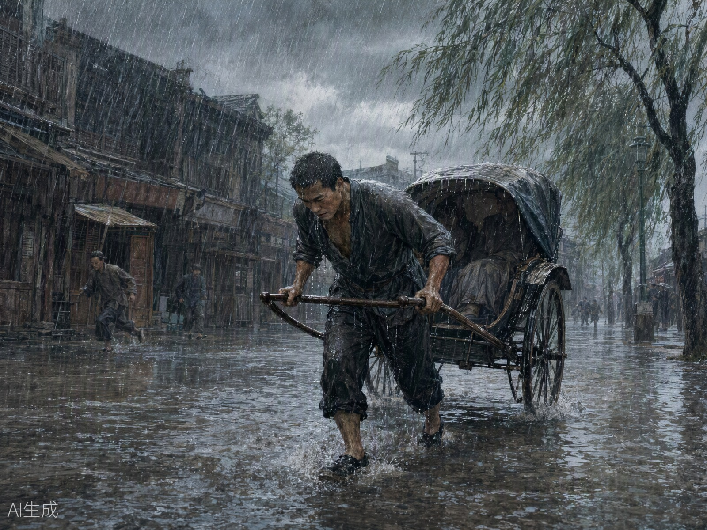
虎妞之死与第三次丢车
Смерть Хуню и третья потеря рикши
情节衔接：虎妞难产，祥子无钱请医。
虎妞在夜里十二点，带着个死孩子，断了气。祥子的车卖了！钱就和流水似的，他的手已拦不住；死人总得抬出去，连开张殃榜[16]也得花钱。
坐在炕沿上，点着了一支烟；并不爱吸。呆呆的看着烟头上那点蓝烟，忽然泪一串串的流下来，不但想起虎妞，也想起一切。到城里来了几年，这是他努力的结果，就是这样，就是这样！他连哭都哭不出声来！车，车，车是自己的饭碗。买，丢了；再买，卖出去；三起三落，象个鬼影，永远抓不牢，而空受那些辛苦与委屈。没了，什么都没了，连个老婆也没了！虎妞虽然厉害，但是没了她怎能成个家呢？看着屋中的东西，都是她的，她本人可是埋在了城外！越想越恨，泪被怒火截住，他狠狠的吸那支烟，越不爱吸越偏要吸。把烟吸完，手捧着头，口中与心中都发辣，要狂喊一阵，把心中的血都喷出来才痛快。
小福子与最后的希望
Сяо Фуцзы и последняя надежда
人间的真话本来不多，一个女子的脸红胜过一大片话；连祥子也明白了她的意思。祥子，经过这一场，在她的身上看出许多黑影来。他还喜欢她，可是负不起养着她两个弟弟和一个醉爸爸的责任！他不敢想虎妞一死，他便有了自由！虎妞也有虎妞的好处，至少是在经济上帮了他许多。他不敢想小福子要是死吃他一口，可是她这一家人都不会挣饭吃也千真万确。爱与不爱，穷人得在金钱上决定，“情种”只生在大富之家。
他开始收拾东西。“你要搬走吧？”小福子连嘴唇全白了。“搬走！”他狠了心，在没有公道的世界里，穷人仗着狠心维持个人的自由，那很小很小的一点自由。看了他一眼，她低着头走出去。她不恨，也不恼，只是绝望。祥子找好车厂，回来取铺盖，看见她的眼已哭肿。他不会说什么，可是设尽方法想出这么两句：“等着吧！等我混好了，我来！一定来！”她点了点头，没说什么。
情节衔接：祥子再遇曹先生，诉说遭遇；曹先生愿意帮他安置小福子。
“要是这么着呀，”曹先生迟疑不决的说，“除非我这儿可以将就你们。你一个人占一间房，你们俩也占一间房；住的地方可以不发生问题。不知道她会洗洗作作的不会，假若她能作些事呢，就让她帮助高妈；太太不久就要生小孩，高妈一个人也太忙点。她呢，白吃我的饭，我可就也不给她工钱，你看怎样？”“那敢情好！”祥子天真的笑了。“不过，这我可不能完全作主，得跟太太商议！”“这么着吧，我先和太太提一声，改天你把她带来；太太点了头，咱们就算成功！”“那么先生，我走吧？”祥子急于去找小福子，报告这个连希望都没敢希望过的好消息。
祥子的心要跳出来，一直飞到空中去，与白鸽们一同去盘旋！什么都有了：事情，工钱，小福子，在几句话里美满的解决了一切，想也没想到呀！看这个天，多么晴爽干燥，正象北方人那样爽直痛快。人遇到喜事，连天气也好了，他似乎没见过这样可爱的冬晴。
“她？早完了！”“白面口袋”向外一指，“吊死在树林里了！”祥子没等她说完，就晃晃悠悠的走出来。走到一块坟地，四四方方的种着些松树，树当中有十几个坟头。阳光本来很微弱、松林中就更暗淡。他坐在地上，地上有些干草与松花。什么声音也没有，只有树上的几个山喜鹊扯着长声悲叫。这绝不会是小福子的坟，他知道，可是他的泪一串一串的往下落。什么也没有了，连小福子也入了上！他是要强的，小福子是要强的，他只剩下些没有作用的泪，她已作了吊死鬼！一领席，埋在乱死岗子，这就是努力一世的下场头！
人把自己从野兽中提拔出，可是到现在人还把自己的同类驱逐到野兽里去。祥子还在那文化之城，可是变成了走兽。一点也不是他自己的过错。他停止住思想，所以就是杀了人，他也不负什么责任。他不再有希望，就那么迷迷忽忽的往下坠，坠入那无底的深坑。他吃，他喝，他嫖，他赌，他懒，他狡猾，因为他没了心，他的心被人家摘了去。他只剩下那个高大的肉架子，等着溃烂，预备着到乱死岗子去。
最后的祥子
Последний Сянцзы
情节衔接：最后的希望破灭后，祥子逐渐放弃了从前的自己。
祥子，多么体面的祥子，变成个又瘦又脏的低等车夫。脸，身体，衣服，他都不洗，头发有时候一个多月不剃一回。他的车也不讲究了，什么新车旧车的，只要车份儿小就好。拉上买卖，稍微有点甜头，他就中途倒出去。坐车的不答应，他会瞪眼，打起架来，到警区去住两天才不算一回事！独自拉着车，他走得很慢，他心疼自己的汗。现在，怎能占点便宜，他就怎办。多吸人家一支烟卷，买东西使出个假铜子去，喝豆汁多吃几块咸菜，拉车少卖点力气而多争一两个铜子，都使他觉到满意。他占了便宜，别人就吃了亏，对，这是一种报复！
祥子的生活多半仗着这种残存的仪式与规矩。有结婚的，他替人家打着旗伞；有出殡的；他替人家举着花圈挽联；他不喜，也不哭，他只为那十几个铜子，陪着人家游街。穿上杠房[17]或喜轿铺所预备的绿衣或蓝袍，戴上那不合适的黑帽，他暂时能把一身的破布遮住，稍微体面一些。遇上那大户人家办事，教一干人等都剃头穿靴子，他便有了机会使头上脚下都干净利落一回。脏病使他迈不开步，正好举着面旗，或两条挽联，在马路边上缓缓的蹭。
打着那么个小东西，他低着头，弯着背，口中叼着个由路上抬来的烟卷头儿，有气无力的慢慢的蹭。大家立定，他也许还走；大家海走，他也许多站一会儿；他似乎听不见那施号发令的锣声。他更永远不看前后的距离停匀不停匀，左右的队列整齐不整齐，他走他的，低着头象作着个梦，又象思索着点高深的道理。体面的，要强的，好梦想的，利己的，个人的，健壮的，伟大的，祥子，不知陪着人家送了多少回殡；不知道何时何地会埋起他自己来，埋起这堕落的，自私的，不幸，社会病胎里的产儿，个人主义的末路鬼！
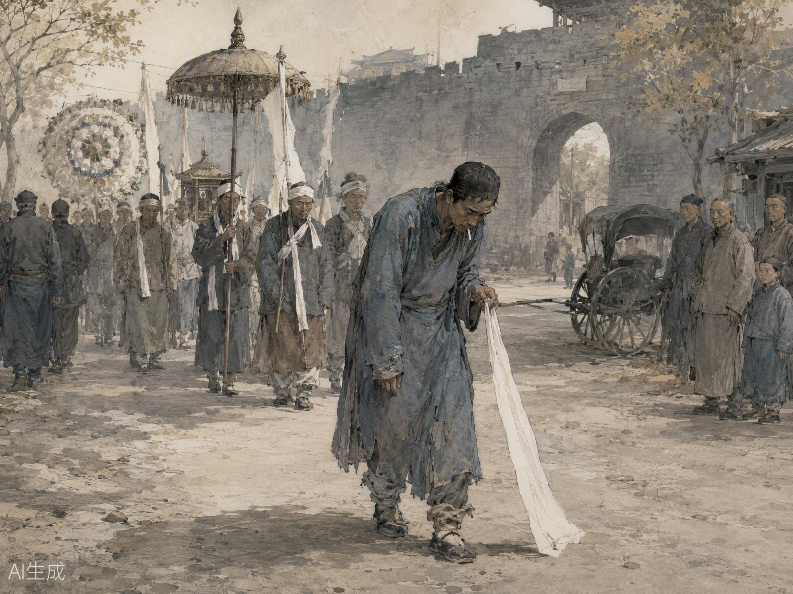